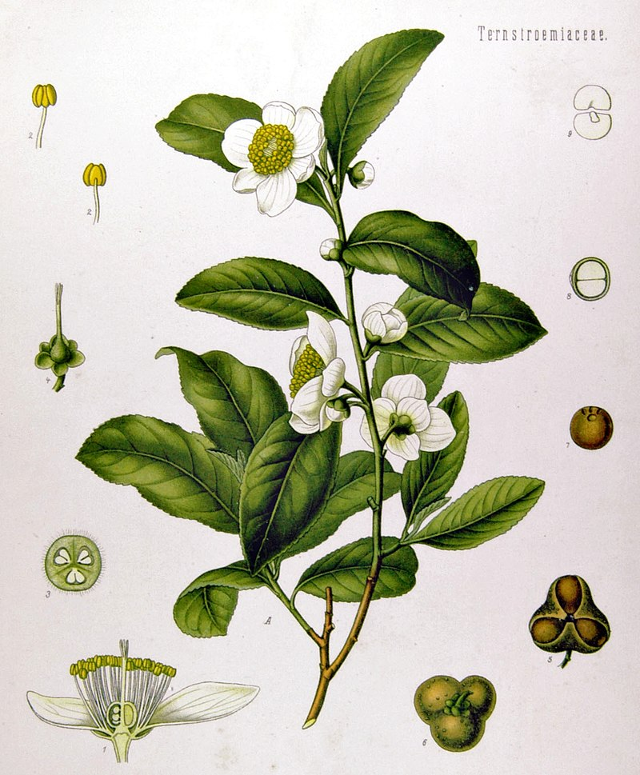
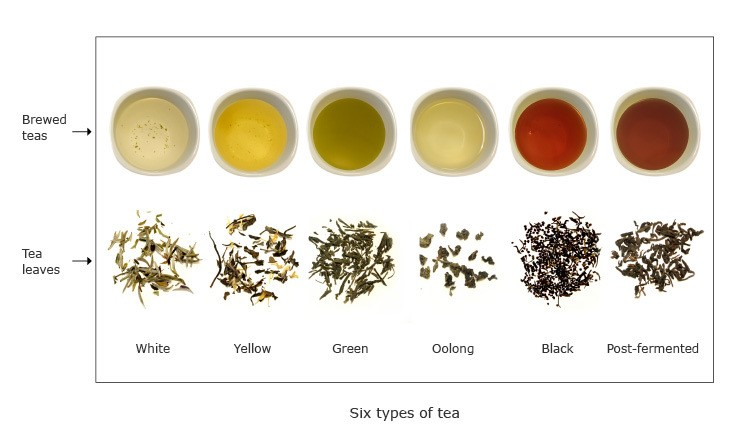

A popular Chinese legend says that in the year 2727BC, an
Emperor Shennong was drinking a bowl of water while a handful of leaves from a nearby
tea tree were blown into his bowl, and just like that, we've been enjoying tea ever since!
The truth of this myth aside, tea is a known favorite prepared from the leaves of the Camellia sinensis plant, a plant that is native to East Asia.
While having his origins in China, the drinking of tea has spread across the world, loved by many for the enjoyable taste and associated health benefits.
It has become the most consumed beverage in the world, second only to water.

A botanical print of Camellia sinensis
How Is Tea Made?
There are generally six categories of tea; white, yellow, green, oolong, black, and post-fermented. All this variety comes from the
the processing of the Camellia sinensis plant.
Once leaves are harvested, they will begin to wilt and enzymes present in the leaves will begin to break down the chlorophyl.
This releases tannins, creating a darker color, and also affecting the flavor of the tea.
However, adding heat to the leaves will deactivate the enzymes, preventing them from carrying out the oxidation process.
With a variety of techniques, tea producers can control the oxidation process, and with it, create a variety of tea.

White tea: Unoxidized, features a delicate floral taste, and the lightest of colors.
Yellow tea: Unoxidized but allowed to yellow. Seen as a more mellow version of green tea, with none of its bitterness.
Green tea: Unoxidized, grassy and flowery tastes, can become bitter
Oolong tea: Lightly oxidized, but not as much as a black tea. Taste can range from sweeter to woody, roasted, and nutty
Black tea: Fully oxidized, generally with more dark, intense, and full-bodied flavors.
Post-fermented tea: Varient of tea that has been allowed to undergo a microbial fermentation, with a more earthy and mushroom-like taste
How To Prepare Tea
There are multiple ways to prepare tea, the most common is the to add one teaspoon of tea per cup of water. The ideal water temperature and steep times differ for each type of tea